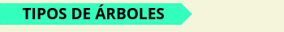
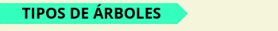
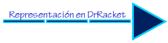
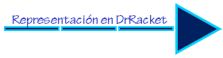

Los árboles son un tipo de dato, cuya estructura puede ser considerada intuitivamente como una estructura jerárquica, el cual se puede definir recursivamente de la siguiente forma:

• Una colección de un dato (el valor de la raíz del árbol) y una lista de hijos que también son árboles.

• Una hoja será un árbol sin hijos (un dato con una lista de hijos vacía).
x
Ejemplo: Árbol Genealogico.


 



 
